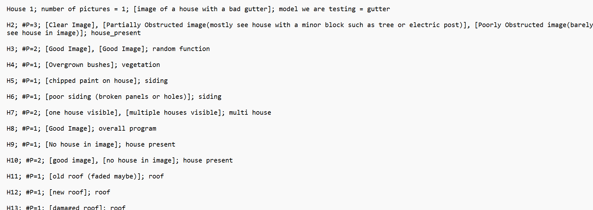
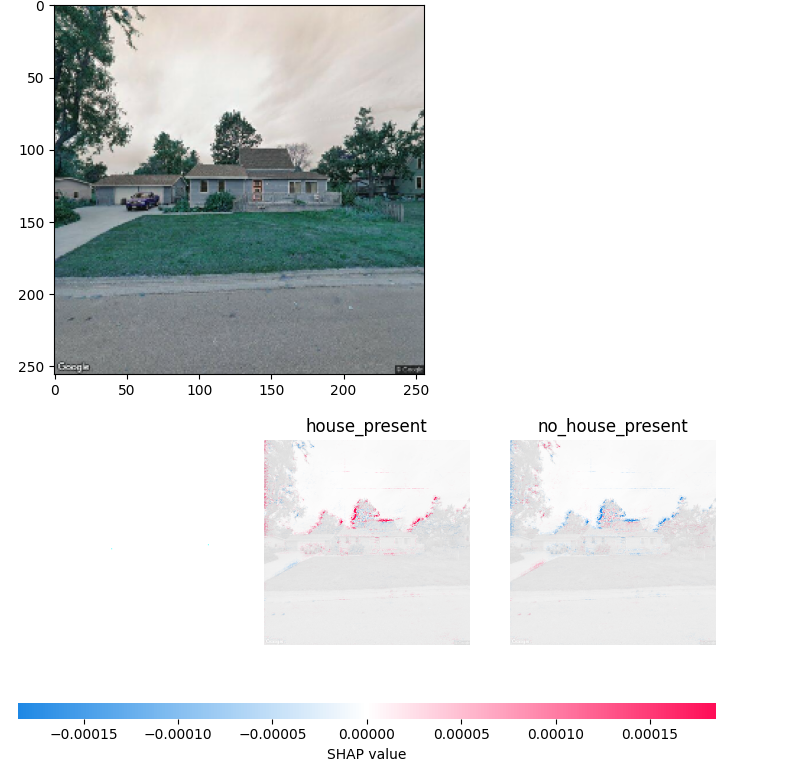
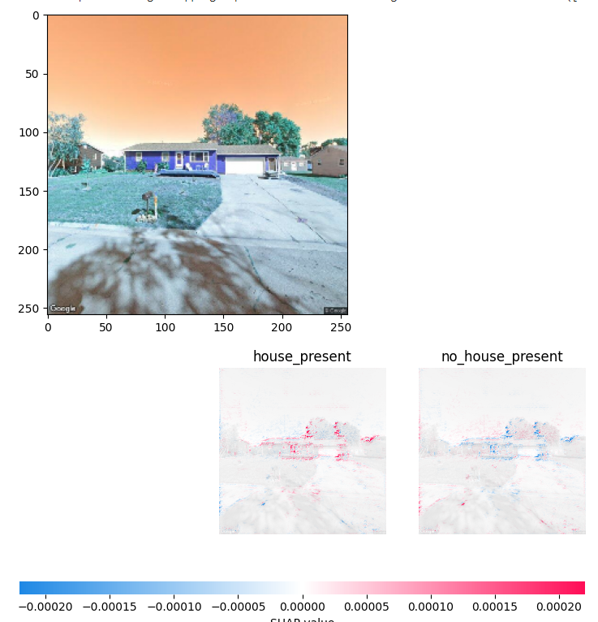

Evaluation Sample, Test Cases, Beacon Images, SHAP
First I took a sample of the data bases to see how accurate the models were predicting. I used about 25 addresses from each source (Grundy Center, Independence, New Hampton, Slater, and Ogden) which totaled to 118 addresses after removing the empty evaluations from New Hampton. This is a very small sample considering we have a couple thousand addresses in our database. I went one by one checking whether each attribute was predicted properly for each image.
Each model returns it’s confidence of each prediction it makes so I took the average as follows, vegetation: 43.2%, siding: 37.02%, gutter: 65.07%, roof: 54.89%. Again, this shows the confidence of how sure the model is of it’s prediction so for example on average the gutter model is 65% sure on average that it’s prediction is correct.
Next I assigned a 0 for false or 1 for true for each model’s prediction on whether it’s guess was accurate compared to the image I looked at. This gave me a percent of accurate guesses in the sample data as follows, house present model: 84.62%, vegetation model: 86.42%, siding: 3.7%, gutter: 82.72%, roof: 88.89%. You may have noticed that the siding model only had a 3.7% accuracy rate which is what caused this sample to be evaluated. I believe that the siding model’s real percentage is 96.3% guessed correctly but that the program to run the models returns the wrong prediction from the model. This should be a quick fix then all of the databases need to be updated. Back to the rest of the models, the percentages are pretty high but I do not think that this is due to the accuracy of the models. I think the models are predicting that the attributes are in good condition most of the time and it just so happens that most houses do not have issues. For example the gutter model had 82.72% accuracy from the sample but many of the images gutters were barely visible which leads me to believe that the model is looking at other house characteristics than actually looking for gutters.
Next some issues I found with this sample:
- The roofing model predicted bad roof when no roof is visible. This may still be desirable because gutter does the same thing where is predicts bad gutter when none is visible in the image
- A small blur spot in the top of the image caused the image to be marked as no house present
- Rand select chose an image of a house from a street corner (Google) rather than the front of a house (Winvest) which means the house present model should have removed the street corner image
- Very visible house marked no house present
- Cornfield marked as house present
- Duplicated addresses
- Image of the inside of a store marked house present
I wrote comments of every issue in one of the sample data csv columns.
Test Cases
Next I made a list of test cases to test the models and overall program. Our team will not be able to finish creating these tests but it is important for next year so when they improve the models they have a basic testing plan.

Beacon Images
Aaron Case on the local foods team was kind enough to spend some time creating a spider to scrape Beacon for information on houses in Independence. I am not sure if we will be providing next years AI Housing team with this code (depends if he shares or not, if not spiders aren’t horrible just take a lot of time to make).
Aaron’s spider scraped image urls and some other information on the Independence homes but the most helpful part was the image links. This provides us with three sources for some addresses in Independence to evaluate. I made a python script to read in these urls and grab all of the images to use for evaluation. After creating this program sorting the images and implementing them into the Independence database was pretty straightforward.
SHAP
After some tweaking of the model Sadat helped me get the SHAP images to show up and they are quite interesting to see.

The red spots in the bottom graphic show which pixels in the house image are most influential in determining that a house is present. As you can see the trees are highlighted so the model is determining that a house is present because it cannot see the full shape of the tree.

This second image shows what we want the model to see more. It is still looking at the trees but it is also looking at the house to make it’s prediction. This is largely due to the lack of training data we have provided the models to train on because most images we have given the model have trees in the image.
Although it is disappointing to see that the model is looking at the trees more than the houses this is an important step in understanding how the models learn from the images we provide.